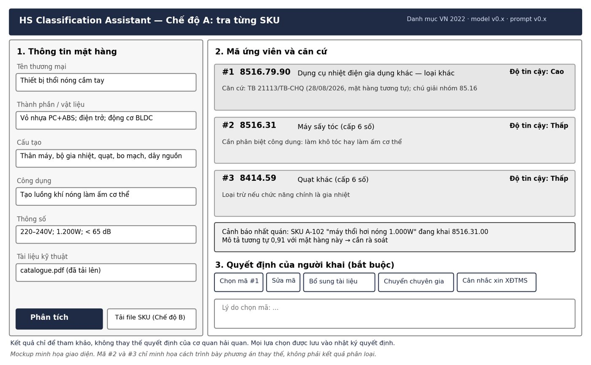

Giải pháp
Trợ lý phân loại mã HS có căn cứ: đề xuất mã, nêu căn cứ, nói rõ khi nào cần hỏi thêm, và rà soát cả danh mục mặt hàng.
Tầm nhìn sản phẩm
Dành cho nhân viên xuất nhập khẩu và chuyên viên đại lý hải quan, những người phải chọn mã HS 8 số cho mặt hàng mới và chịu trách nhiệm về nội dung khai. Sản phẩm đưa ra các mã ứng viên kèm tiền lệ, chú giải và quy tắc áp dụng; cho biết khi nào thông tin chưa đủ để phân biệt các mã; và cảnh báo mặt hàng tương tự đang khai khác mã.
Đây là định hướng khác biệt, chưa được chứng minh bằng thử nghiệm so sánh.
Phạm vi không làm
- Không quyết định mã thay người khai
- Không tự điền tờ khai, không kết nối trực tiếp phần mềm khai báo ở MVP
- Không xác định trị giá hay xuất xứ
- Kết quả không có giá trị pháp lý
Cách hoạt động
Năm bước bám theo trình tự phân loại theo quy định. Nhãn bên phải cho biết bước nào đã chạy thử, bước nào còn là kế hoạch.
- Kế hoạch
Kiểm tra thông tin
Trích các thuộc tính quyết định: thành phần, cấu tạo, công dụng, dạng hàng, bao bì. Thiếu thông tin thì dừng và liệt kê phần cần bổ sung, không đoán mã.
- Đã chạy
Sinh mã ứng viên
Tìm tiền lệ theo từ khóa và theo nghĩa, kể cả tiền lệ tiếng Anh; khớp với mô tả trong danh mục để không bỏ sót mã chưa có tiền lệ.
- Kế hoạch
Áp dụng sáu quy tắc
Đối chiếu nội dung nhóm và chú giải; áp QT2–QT5 khi cần; QT6 so sánh các phân nhóm cùng cấp để xuống dòng 8 số.
- Kế hoạch
Đo độ bất định
Đưa ra tập mã chứa mã đúng với xác suất cho trước (conformal prediction); tập rộng nghĩa là cần thêm thông tin.
- Kế hoạch
Lập phiếu phân loại
Ghi căn cứ, quy tắc đã áp dụng, lý do loại trừ mã cạnh tranh; người khai chọn mã và ghi lý do.
Song song, một mô-đun rà cả danh mục hàng của doanh nghiệp để tìm mặt hàng giống nhau mà đang khai khác mã. Mọi kết quả chỉ để tham khảo; người khai chọn mã và ghi lý do.
Đầu ra: phiếu phân loại HS
Phiếu cho phép người kiểm tra lần theo đường đi từ hàng hóa, qua các quy tắc và tài liệu, đến mã kết luận.
Hai kịch bản sử dụng
Kịch bản A dùng hằng ngày khi có mặt hàng mới; kịch bản B dùng định kỳ để rà soát.
A. Tra mã cho một mặt hàng mới
- Nhập tên hàng, thành phần, cấu tạo, công dụng, thông số; tải catalogue nếu có.
- Nhận ba mã 8 số kèm căn cứ trích dẫn và mức tin cậy.
- Nếu chưa đủ căn cứ: xem thông tin còn thiếu và bước nên làm tiếp.
- Chọn mã, ghi lý do; hệ thống lưu nhật ký và xuất phiếu phân loại.
B. Rà soát cả danh mục
- Tải tệp danh mục mặt hàng kèm mã đang khai (Excel, CSV).
- Xem các cặp mô tả tương tự nhưng mang mã khác nhau.
- Quyết định sửa; sai sót đã thông quan có thể khai bổ sung trong 60 ngày theo quy định.

So sánh với công cụ hiện có
Tra cứu mã HS bằng AI đã có công cụ miễn phí; Cục Hải quan còn dự kiến xây dựng trợ lý ảo tra cứu mã số trong dự án Hải quan số giai đoạn 2026–2028.
| Công cụ | Gợi ý mã | Căn cứ, trích dẫn | Rà soát danh mục | Khi chưa chắc chắn | Chi phí |
|---|---|---|---|---|---|
| Chatbot AI của Cục Hải quan | Có, ở mức tham khảo; chạy trên AWS với mô hình ngôn ngữ lớn và truy xuất tri thức | Có (quan sát 1 phiên) | Không có trong chức năng công bố | Hướng dẫn liên hệ bộ phận hỗ trợ (1 phiên) | Miễn phí |
| ECUS.AI | Có, tích hợp phần mềm khai báo | Chưa có thông tin | Chưa có thông tin | Chưa có thông tin | Miễn phí trong thí điểm |
| GPT “Tham khảo chính sách mã số XNK” | Có; trả đúng các mặt hàng ví dụ trong phép thử không chính thức của nhóm | Có dẫn tài liệu (quan sát) | Không quan sát thấy | Khuyến cáo bổ sung thông tin (1 phiên) | Cần tài khoản ChatGPT |
| Tra cứu thủ công | Người dùng tự tra biểu thuế, chú giải | Người dùng tự trích | Không | Người dùng tự quyết | Miễn phí |
| Sản phẩm của nhóm (mục tiêu) | Tập mã có mức tin cậy | Bắt buộc, có kiểm tra trích dẫn | Có | Liệt kê thông tin còn thiếu, đề xuất bước tiếp | Chưa định giá |
Cột của sản phẩm nhóm là mục tiêu thiết kế. Nhóm chưa tìm thấy công bố về độ chính xác của các công cụ trên một tập kiểm thử có kết luận chính thức; con số 99,78% mà Chatbot AI công bố là tỷ lệ phản hồi thành công. Vì vậy nhóm sẽ đo tất cả trên cùng một tập trước khi kết luận.
Câu hỏi thường gặp
Trả lời theo đúng hiện trạng của dự án.
Sản phẩm có thay thế quyết định của hải quan không?
Không. Kết quả chỉ để tham khảo. Người khai chịu trách nhiệm về nội dung khai (Luật Hải quan 2014, Điều 18); khi có tranh chấp, cơ quan hải quan là bên xác định mã.
Khác gì Chatbot AI của Cục Hải quan và các GPT tra cứu mã số?
Các công cụ này đã hỗ trợ gợi ý mã HS miễn phí. Sản phẩm của nhóm tập trung vào phần các công cụ đó không làm theo chức năng đã công bố: phiếu phân loại lưu vết theo từng quy tắc và trích dẫn, rà soát nhất quán cả danh mục mặt hàng, chạy nội bộ để bảo vệ thông tin sản phẩm. Nhóm sẽ đo độ chính xác của các công cụ và của hệ thống nhóm trên cùng một tập kiểm thử trước khi kết luận.
Dữ liệu lấy từ đâu?
Thông báo xác định trước mã số công khai trên cổng Cục Hải quan; biểu thuế song ngữ 2026 và chú giải chi tiết HS 2022 do Chi cục Hải quan khu vực VIII biên tập, chia sẻ để tham khảo; ruling công khai của Hải quan Mỹ (CROSS); danh mục HS 2022. Nhóm tải thủ công, không vượt captcha, ẩn danh tên doanh nghiệp và mã số thuế.
Mô hình đã chạy được đến đâu?
Đã có baseline BM25 và TF-IDF + hồi quy logistic trên dữ liệu CROSS, thử nghiệm conformal sơ bộ, và OCR thử trên 6 văn bản Việt Nam (đọc đúng mã 8 số ở cả 6, mẫu còn nhỏ). Các bước còn lại thuộc Sprint 2–4.
Dữ liệu của doanh nghiệp có bị gửi ra ngoài không?
Thiết kế ưu tiên chạy trên máy nội bộ. Nếu dùng mô hình ngôn ngữ qua API, chỉ phần mô tả hàng hóa đã ẩn danh được gửi đi. Nhóm chỉ dùng dữ liệu mặt hàng của doanh nghiệp khi có thỏa thuận bảo mật.